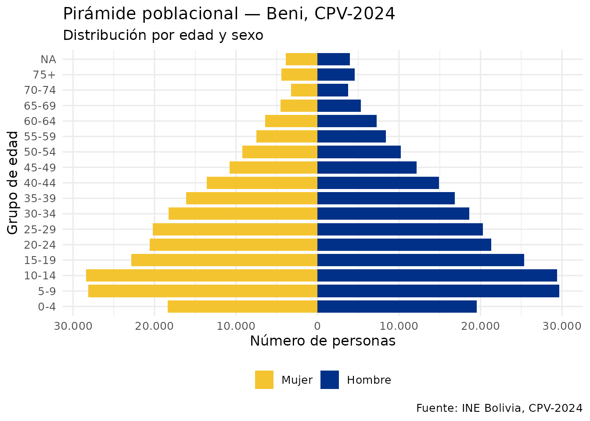
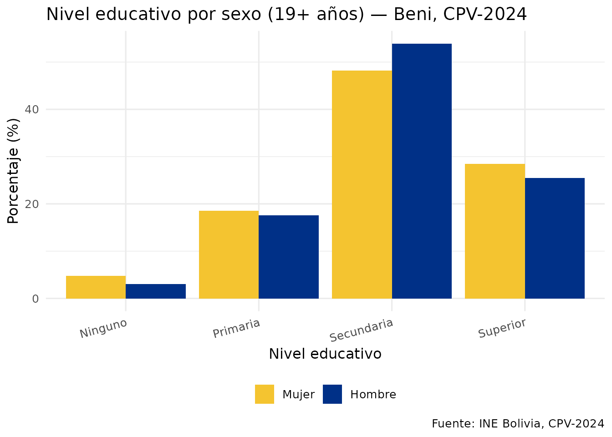
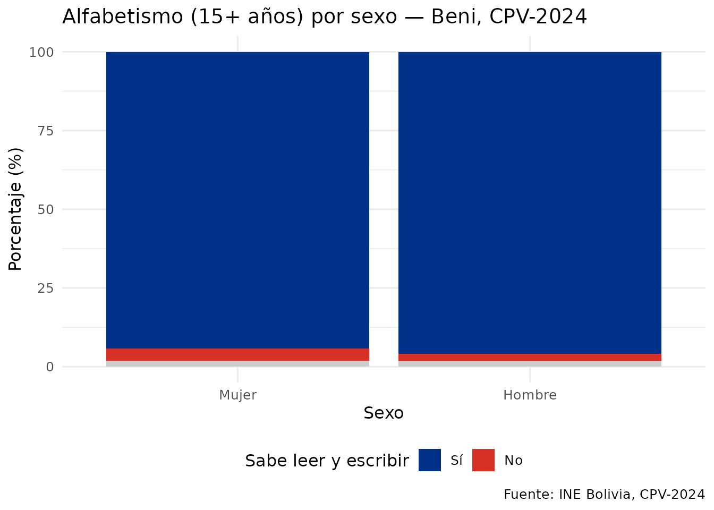
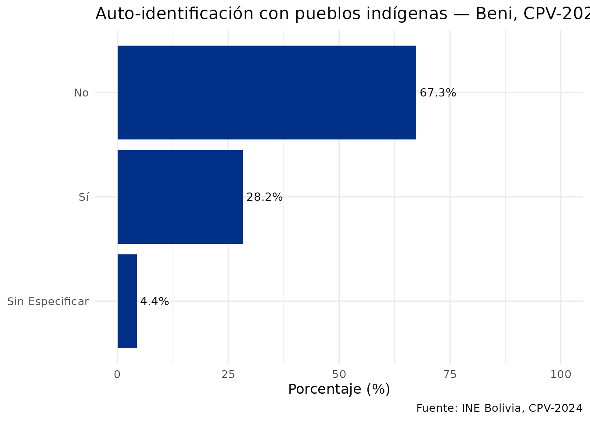

Análisis demográfico con censosbo
Source:vignettes/analisis-demografico.Rmd
analisis-demografico.RmdIntroducción
Esta vignette muestra cómo usar censosbo para análisis
demográficos con los datos reales del CPV-2024. Los ejemplos descargan
datos del departamento de Beni (~12 MB), que se guarda
en caché local tras la primera descarga.
# Descargar datos de Beni con las variables de interés
personas <- get_personas_2024(
departamento = "Beni",
variables = c("p25_sexo", "p26_edad", "nivel_edu",
"p40_lee", "p32_pueblo_per")
) |>
collect() |>
etiquetar_valores()
#> ℹ Descargando persona_dep08.parquet (~12 MB)...
#> ✔ Descargado persona_dep08.parquet [468ms]
#>
nrow(personas)
#> [1] 488260Pirámide de edades
piramide <- personas |>
filter(!is.na(p26_edad), !is.na(p25_sexo)) |>
mutate(
grupo_edad = cut(
p26_edad,
breaks = c(0, 4, 9, 14, 19, 24, 29, 34, 39, 44, 49,
54, 59, 64, 69, 74, 200),
labels = c("0-4","5-9","10-14","15-19","20-24","25-29",
"30-34","35-39","40-44","45-49","50-54",
"55-59","60-64","65-69","70-74","75+"),
right = TRUE
),
n_pir = ifelse(p25_sexo == "Mujer", -1L, 1L)
) |>
count(grupo_edad, p25_sexo, wt = n_pir)
ggplot(piramide, aes(x = grupo_edad, y = n, fill = p25_sexo)) +
geom_col(width = 0.8) +
coord_flip() +
scale_fill_manual(values = c("Mujer" = "#F4C430", "Hombre" = "#003087")) +
scale_y_continuous(labels = function(x) {
formatC(abs(x), format = "d", big.mark = ".", decimal.mark = ",")
}) +
labs(
title = "Pirámide poblacional — Beni, CPV-2024",
subtitle = "Distribución por edad y sexo",
x = "Grupo de edad", y = "Número de personas", fill = NULL,
caption = "Fuente: INE Bolivia, CPV-2024"
) +
theme_minimal(base_size = 12) +
theme(legend.position = "bottom")
Nivel educativo por sexo
# `nivel_edu` es una derivada del INE calculada sobre la población de 19 años o
# más (ver codebook("nivel_edu")$universo), así que ese es el universo real del
# gráfico aunque se filtre por una edad menor.
edu_sexo <- personas |>
filter(!is.na(nivel_edu), !is.na(p25_sexo), p26_edad >= 19) |>
count(nivel_edu, p25_sexo) |>
group_by(p25_sexo) |>
mutate(pct = n / sum(n) * 100)
ggplot(edu_sexo, aes(x = nivel_edu, y = pct, fill = p25_sexo)) +
geom_col(position = "dodge") +
scale_fill_manual(values = c("Mujer" = "#F4C430", "Hombre" = "#003087")) +
labs(
title = "Nivel educativo por sexo (19+ años) — Beni, CPV-2024",
x = "Nivel educativo",
y = "Porcentaje (%)",
fill = NULL,
caption = "Fuente: INE Bolivia, CPV-2024"
) +
theme_minimal(base_size = 12) +
theme(legend.position = "bottom", axis.text.x = element_text(angle = 15, hjust = 1))
Alfabetismo por sexo
# `p40_lee` se preguntó a las personas de 5 años o más
# (codebook("p40_lee")$universo). Aquí se usa 15+, el umbral con el que se publican
# las tasas oficiales de alfabetismo, para que la cifra sea comparable con ellas.
alfa <- personas |>
filter(!is.na(p40_lee), !is.na(p25_sexo), p26_edad >= 15) |>
count(p25_sexo, p40_lee) |>
group_by(p25_sexo) |>
mutate(pct = n / sum(n) * 100)
ggplot(alfa, aes(x = p25_sexo, y = pct, fill = p40_lee)) +
geom_col() +
scale_fill_manual(
values = c("Sí" = "#003087", "No" = "#d73027", "Sin especificar" = "grey80")
) +
labs(
title = "Alfabetismo (15+ años) por sexo — Beni, CPV-2024",
x = "Sexo",
y = "Porcentaje (%)",
fill = "Sabe leer y escribir",
caption = "Fuente: INE Bolivia, CPV-2024"
) +
theme_minimal(base_size = 12) +
theme(legend.position = "bottom")
Auto-identificación con pueblos indígenas
ind <- personas |>
filter(!is.na(p32_pueblo_per)) |>
count(p32_pueblo_per) |>
mutate(pct = n / sum(n) * 100)
ggplot(ind, aes(x = reorder(p32_pueblo_per, pct), y = pct)) +
geom_col(fill = "#003087") +
geom_text(aes(label = paste0(round(pct, 1), "%")), hjust = -0.1, size = 3.5) +
coord_flip() +
ylim(0, 100) +
labs(
title = "Auto-identificación con pueblos indígenas — Beni, CPV-2024",
x = NULL,
y = "Porcentaje (%)",
caption = "Fuente: INE Bolivia, CPV-2024"
) +
theme_minimal(base_size = 12)
Comparación nacional por departamento
El siguiente ejemplo descarga los nueve departamentos (~282 MB en total). Ejecuta en tu sesión de R cuando necesites datos nacionales.
# Edad promedio por departamento (todos los datos del país)
edad_dep <- get_personas_2024(variables = c("idep", "p26_edad")) |>
filter(!is.na(p26_edad)) |>
group_by(idep) |>
summarise(edad_promedio = mean(p26_edad, na.rm = TRUE), .groups = "drop") |>
collect() |>
left_join(departamentos(), by = "idep") |>
arrange(edad_promedio)
ggplot(edad_dep, aes(x = reorder(nombre_dep, edad_promedio), y = edad_promedio)) +
geom_col(fill = "#003087") +
geom_text(aes(label = round(edad_promedio, 1)), hjust = -0.1, size = 3.5) +
coord_flip() +
ylim(0, 35) +
labs(
title = "Edad promedio por departamento — Bolivia, CPV-2024",
x = NULL,
y = "Edad promedio (años)",
caption = "Fuente: INE Bolivia, CPV-2024"
) +
theme_minimal()